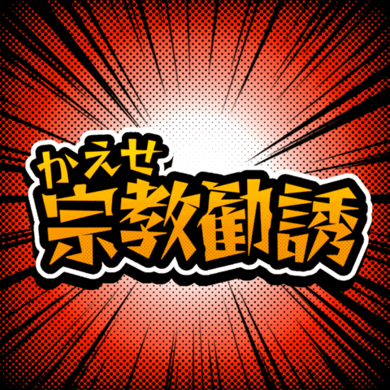
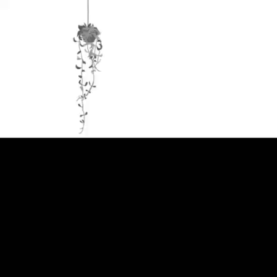
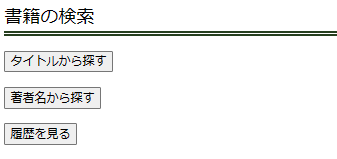
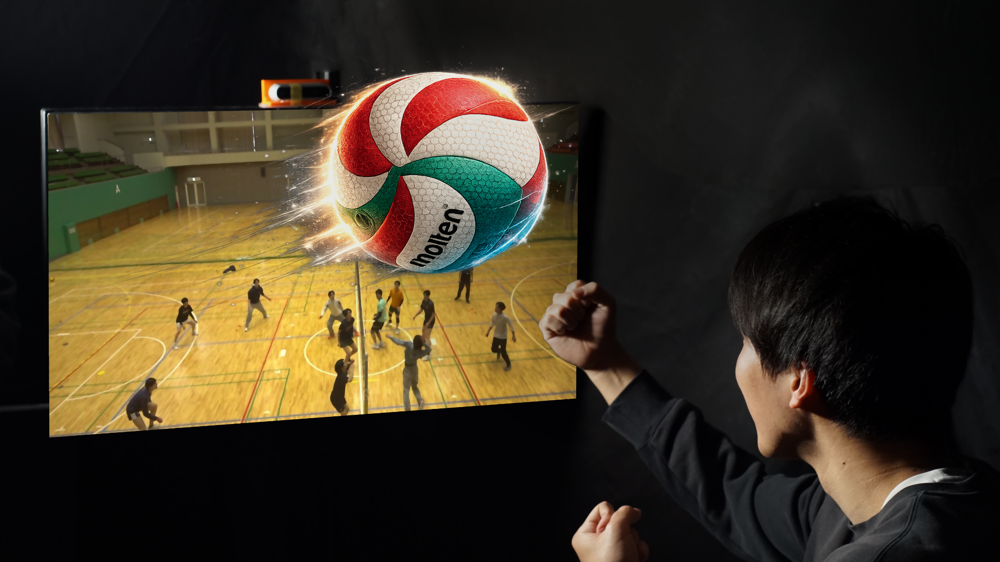

自己紹介
法政大学 情報科学部 ディジタルメディア学科に所属し、裸眼3Dディスプレイを用いた バレーボール観戦映像の視認性向上に関する研究に取り組んでいます。
研究活動に加え、ゲーム制作やWeb制作にも取り組んでおり、 技術だけでなく「見やすい」「楽しい」「伝わりやすい」体験を形にすることに興味があります。
趣味・関心
バレーボールは中学から継続しており、競技経験と研究テーマの両面から強い関心があります。 また、ゲームや映像、ライブ・エンタメのような、人を惹きつける体験設計にも興味があります。
学歴
- 東京都立杉並高等学校 [2019/04～2022/03]
- 法政大学 情報科学部 ディジタルメディア学科 [2022/04～2026/03]
- 法政大学大学院 情報科学研究科 [2026/04～2028/03 見込]
保有資格
- TOEIC 605 点 (Listening: 310, Reading: 295) 取得年月: 2024/10
- 普通自動車第一種運転免許 AT限定 取得年月: 2022/05
学会・活動実績
- バレーボール部に所属し、中学から現在まで活動継続中。大学2年時に関東理工系大学リーグ2部から1部への昇格に貢献。 3年時には1部リーグの全試合に出場し、優勝を2度達成。
- 裸眼3Dディスプレイを用いたバレーボール観戦映像の視認性向上に関する研究に取り組む。 GPA 3.34で卒業し、優秀学生賞を受賞。
- 2025.10 立体メディア技術研究会にて発表。学生奨励賞を受賞。
- 2026.3 サイバースペースと仮想都市研究会にて発表。
成果物

返せ！宗教勧誘
Unity1Week 参加作品
大学3年生の時に参加した Unity1Week テーマ「かえす」にて制作したゲームです。
次々にやってくる宗教勧誘のおばさんを殴って土に「かえす」ゲームです。
友人と共同制作し、主に企画、ルール作り、ゲームシステムの開発を担当しました。
この制作を通して、チーム開発の流れや Git の使用法、C# コーディングを身につけました。
コンペ終了後の評価期間では人気のゲームに選ばれ、現在では総プレイヤー数は約2万人を達成し、
実況動画も複数本投稿されています。

catwalk
Unity1Week 参加作品
大学3年生の時に参加した Unity1Week テーマ「ない」にて制作したゲームです。
色がなくなってしまった世界で、猫が色を取り戻すために冒険をするアクションゲームで、
試行数と記憶力が鍵になります。
こちらもコンペ終了時に人気のゲームに選ばれました。

Open Library APIを使用した書籍検索ページ
Web制作 / API連携
Open Library API を用いて書籍検索ができる Web ページを作成しました。
API から取得したデータを画面に表示し、検索機能を実装しています。
また SQL を利用し、検索履歴の機能も実装しました。

卒業論文
研究 / 3Dディスプレイ
タイトル
バレーボールの立体映像観戦における視差最適化
概要
著者は、裸眼3Dディスプレイにおけるバレーボール観戦映像の視差最適化手法を提案する。
バレーボールの観戦映像は、試合全体を把握するためにコートを俯瞰する構図で撮影されることが多く、
奥行き方向のボールの動きが視認しにくい。そこで、裸眼3Dディスプレイを用いた立体視による
視認性向上を検討する。従来の撮影法では撮影時に瞳孔間距離に相当する基線長を用いるため、
視差が小さく十分な立体感が得られにくい。本研究では、撮影段階において十分な視差を確保するため、
眼間距離よりも長い長基線長を設定する。さらに提示段階では、快適性向上を目的として、
顕著性マップに基づく注視点推定と水平シフトを用い、注視点付近の視差を抑制する。
これにより、立体感を維持しながら快適性の向上を実現する。提案手法の有効性については、
視差角の分布、最大視差角、および時間変化に基づく定量評価と、
視認性および臨場感に関する主観評価実験により検証した。